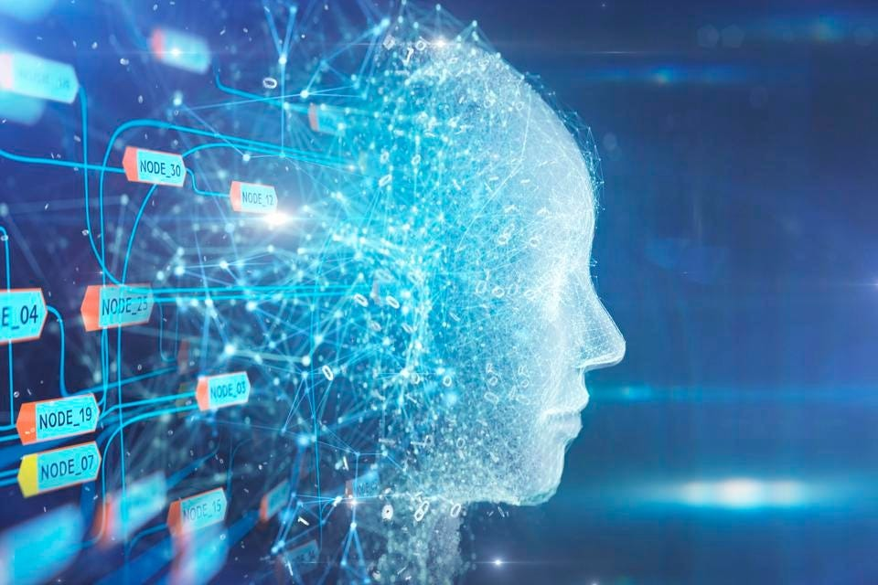

Artificial Intelligence
In this example, the image will float to the left in the paragraph, and the text in the paragraph will wrap around the image.

Whenever we think of Artificial Intelligence, the first thing that strikes our mind is Robots. A few decades ago, Robots/ fascinated us the most with movies showcasing Robots / Superhumans performing insanely tough jobs effortlessly and living on par with humans. Now Robots like Sophia are a reality and we find AI everywhere. Right from robotic vacuum cleaners, virtual assistants like SIRI, robots that perform surgeries in healthcare, robots that write codes, and of course the self-driving cars and trucks – most of these are a reality and the world of Artificial Intelligence is rapidly evolving. Starting with IBM’s chess-playing computer ‘Deep Blue’ which won a chess match against World Champion, to Googles AlphaGo, we have seen fascinating discoveries in this AI revolution.
In simple terms, Artificial Intelligence is all about training machines to mimic human behavior, specifically, the human brain and its thinking abilities. Similar to the human brain, AI systems develop the ability to rationalize and perform actions that have the best chance of achieving a specific goal.
Artificial Intelligence focuses on performing 3 cognitive skills just like a human – learning, reasoning, and self-correction.
AI is a broader term that describes the capability of the machine to learn and solve problems just like humans. In other words, AI refers to the replication of humans, how it thinks, works and functions.
On the lower ground, AI can be seen as a program that instructs the machine to function in a certain way according to the situation. So, we can call a bunch of if-else statements, AI. For instance, self-driving car moving on the road.There are two ways of incorporating intelligence in artificial things i.e., to achieve artificial intelligence. One is through machine learning and another is through deep learning. That means DL and ML are ways of achieving AI
Cyber Security
 Cyber Security is the practice of Protecting computers, mobile devices, Servers, electronic Systems, networks, and data from malicious attacks. It’s also known as Information Security (INFOSEC) or Information Assurance (IA), System Security. Cyber Security is important because the government, Corporate, medical organizations collect, military, financial, process, and store the unpreceded amount of data on a computer and other property, personal information, or exposure could have negative consequences.
Cyber Security is the practice of Protecting computers, mobile devices, Servers, electronic Systems, networks, and data from malicious attacks. It’s also known as Information Security (INFOSEC) or Information Assurance (IA), System Security. Cyber Security is important because the government, Corporate, medical organizations collect, military, financial, process, and store the unpreceded amount of data on a computer and other property, personal information, or exposure could have negative consequences.
Cyber security is important in any organization no matter how big or small is the organization. Due to increasing technology and increasing software across various sectors like government, education, hospitals etc., the information is becoming digital through wireless communication networks.
T importance of cyber security is to secure our data of various organizations like email, yahoo, etc. which have extremely sensitive information that can cause damage to both our reputation. Attackers target both small and large companies and obtain their important documents and information.
A cyber-attack is a deliberate attempt by external or internal threats or attackers to exploit and compromise the integrity and confidentiality of the information system of a target organization.
Cyber-attacks come in a wide variety and the following list highlights some of the important ones that criminals and attackers use to exploit software:
Malware,
Ransomware,
Injection attacks,
Session management and Man-in-the-Middle attacks,
Phishing,
Denial of service,
Privilege escalations and
Unpatched/Vulnerable software.
Cloud Computing
In Simplest terms, cloud computing means storing and accessing the data and programs on remote servers that are hosted on internet instead of computer’s hard drive or local server. Cloud computing is also referred as Internet based computing.
Cloud Computing Architecture:
Cloud computing architecture refers to the components and sub components required for cloud computing. These component typically refer to:
1.Front end(fat client, thin client)
2.Back end platforms(servers,storage)
3.Cloud based delivery and a network(Internet, Intranet, Inter cloud).